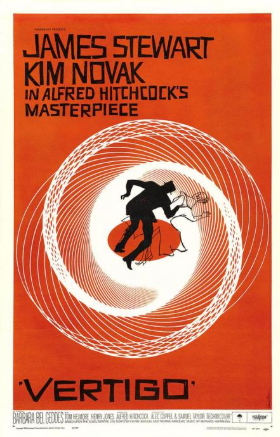
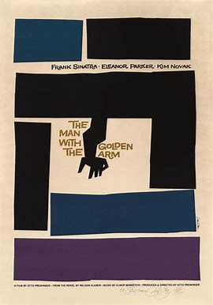
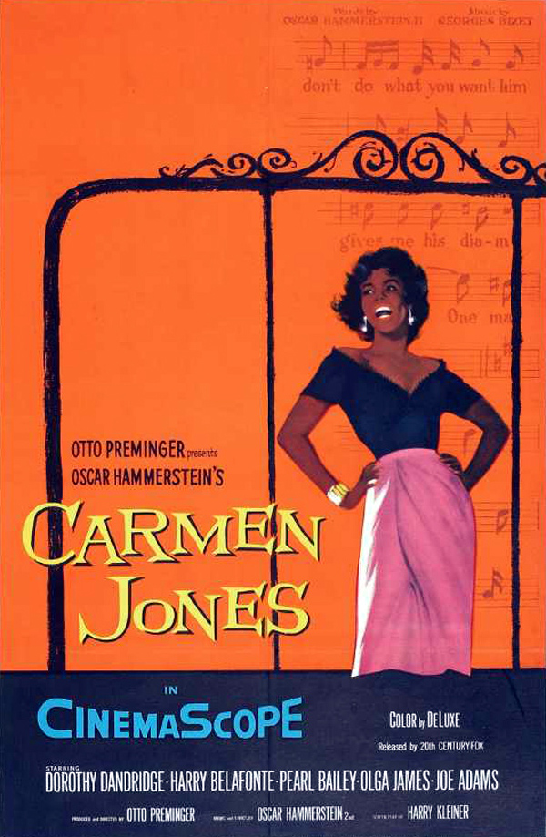

Did Saul Bass Attain Legendary Status?
Bass. Before I ever met him, before we worked together, he was a legend in my eyes. His designs, for film titles and company logos and record albums and posters, defined an era. In Essence, they found and distilled the poetry of the modern, industrialized world. They gave us a series of crystallized images, expressions of who and where we were and of the future ahead of us. They were images you could dream on. They still are'.
Martin Scorsese
Saul Bass wasn’t just an artist who contributed to the first several minutes of some of the greatest movies in history, in my opinion his body of work qualifies him as one of the best filmmakers of this, or any other time.
Steven Speilberg
Born in the Bronx in 1920 in the household of Eastern European Jewish Immigrants. After graduating high school he received a fellowship to the Arts Student League in Manhatten. He then went onto Brooklyn College and even continued his studies taking night classes with a Mentor named Gyorry Kepes. From this alone you know he had a passion for the arts, a drive and vision of where he saw his career going.
My Inpiration
When chosing my artist for this essay I was immediately drawn to Saul, we were given a lecture on the pioneers of graphic design and his work not only stood out to me but inspired me to continue pursuing a similiar path. I’ve been working with graphics and motion for a while now and to be quite honest I was having serious doubts about my career path in design; I was beginning to enjoy the course but didnt really see how my previous experience was relative to the critera. Then I seen a few samples of Sauls work and it was like a lighning bolt striking me in the brain 'This is what i’m supposed to be doing'. The way he was able to capture the tone, mood and essence of a movie with a certain style of typeface animated in a certain sequencial way with accompaning music was like getting a rejuvination of creativity into my system.
After he completed his studies he worked freelance for sereral companies and agencies, including the illustrious ‘Warner Brothers'. He then moved to Los Angeles and pursued graphic designing as a commercial artist. In the 1940s he took on some print promotional work, he even started his own practice in 1952 and a few years later established his own private firm, Saul Bass & Associates. As a graphic designer he became the leading designer in trade symbols of corporate indentity programs. Many of the logos are still in use today, Quaker Oats, Minolta and AT&T to name a few. = Click The Image below for more on Sauls icons... 
After his debut work in Hollywood he worked for several reputable production houses including the title sequence for ‘The Seven Year Itch’. However it was’nt until he made his contribution to Premingers ‘The Man with the Golden Hand’ that he gained his reputation. At 35 and making a name for himself in the movie business; he was not just another graphic designer. Modernism was at this time taking the reigns in the graphic design world, artists were pushing the boundaries in their own way with new experimental photographic and grid techniques setting the trend for the times, but Saul was the runt of the litter and seperated himself from the rest with his uncanny ability to tap into the core route of the media and not only convey what the content was about; but pull the audience in with his work.
Pushing Boundaries
He expanded the boundaries of graphic design in the late 50s to include film title sequences - a genre he transformed. His breakthrough came in 1954 when he was offered a job by filmmaker Otto Preminger to Design a poster for Carmen Jones...  Preminger was so availed by his expertise he hired him for his film title sequence. With that opportunity, Saul came to the realisation that the title sequence not only served as mere static credits but it could enhance the watching experience of the audience.
I could break down a few samples of his body of work but a good example of what he could do with his talents is the title sequence of the movie ‘Psycho 1960’ well over 60 years on I know for a fact he captured that movies essence so much in the opening few minutes (accompanied with the music ofcourse) it almost gave you chills. Being the first artist to use kinetic typography in the title sequence of movies he already has a stamp on the industry and will always have his place in history with his strong powerful & emotive techniques. ‘Walk on the wildside 1962’ features an ordinary cat as a dangerous predator and ‘Nine hours in Rama 1963’ he represents the internal mechanism of a clock embodying a large landscape. Two samples of his work you could consider the epitone of his Philosophy.
This is only a glimpse into his movie sequences... For more
Sauls Inspiration
Saul seemed to get inspiration from alot of different areas, In The Arts Students League he was exposed to the work of the great European modernists like Vincent Van Gogh and Paul Gaugin. His mentor from Brooklyn I mentioned before introduced him to the major art movements of the time - Bauhaus and Russian Constructivism and the brash imagery and taglines he saw in magazines throughout the 1920s & 30s. These I think played an intricle part in his style. In saying that though, In my opinion his mindset bordered on surrealism, Salvador Dali was a big inspiation to me and I know Sigmund Freuds theories on dream interpretation played a big part in his work, not that I’m saying his work followed this theory but more he rendered the ordinary and extraordinary by aquainting the audience with familiar objects in an unfamiliar way.
It was the post war era with its economic boom and his facination with the psychology that followed pushed him to the west coast and become part of a thriving creative community. From his book ‘Saul Bass, A life in films and design’ there's an exract - He did not believe In direct casuality between early life and later work but felt that the traces with the former were always with one. An omniviriois reader, he enjoyed biographies about creative people, particularly those work he admired, receiving in the greater ‘knowing’ of a person. Now if you read ‘The technique in producing ideas by James Webb Young’ youl’ll find that people generally fall into two categories in the creative industry...A rentier, someone who gets by with just the essential information they need and a specular, someone who delves into every resource they can for inspiration. I think Saul would definately fall into the later. His versitility was often remarked upon, as was his problem solving approach to design. In 1954 ‘American Artist’ arrtibuted the ‘underlying logic’ of his work to a’searching mind...always inquiring into the reason of things’ he also had a searching eye and it was no coincedence that one of the first flms he and his wife Elaine (another great artist and a major factor in Sauls success) made was called ‘The Searching Eye 1964’
Later in his career he even taught from time to time, and in the University of Southern California one of his students was George Lucus and was a hero and a father figure to him. Lucas actually stated: One of my first mentors, Saul believed in me when I was a student, pushing my work when others were not interested. His Extraordinary vision and creative talents left their unique imprint on me.
From a very young age he showed early signs of artistic expression. There was a real vitality to his abstraction aswell as his Illustration. Lettering and that came from his facility with drawing. He loved to tell stories to amplify or make a solid piont, or simply to make one laugh. Traits of a great artist I sadly lack but reading and learning about how Saul was able to find the core problem of a design and translate It into visually compelling icons inspires me to learn how to approach design from the correct angles. Like Saul I've loved art & design from I was very little but I think one of the major keys to Sauls success was his communication skills. Having that confidence to articulate ideas and concepts through research and exploring the root or problem of a design came as a second nature to Saul and with his extensive education he was obviously taught from the great artists and movements of his time; this was in my opinion, not only the correct approach to design problems but problems in general. I love drawing and feel I've aquired a skillset in certain areas of design, my problem though is and always has been I didnt search into the problem of design, I did it simply for fun hence me trying to learn through this course the correct approach to design. With Saul Bass and his body of work as inspiration I feel I've a fighting chance of learning how to communicate effectivly through visual art and animation.

So If you haven’t guessed already. My original question was retorical. Saul’s brilliance became widely recognisabe and he had the greatestest respect from some the greatest film makers of my generation and for that reason I think his body of work and creative influence will live on long after we are all gone. Artists like this only come along once in a lifetime. The Michael Jordon of Graphic Design & movie title sequences.